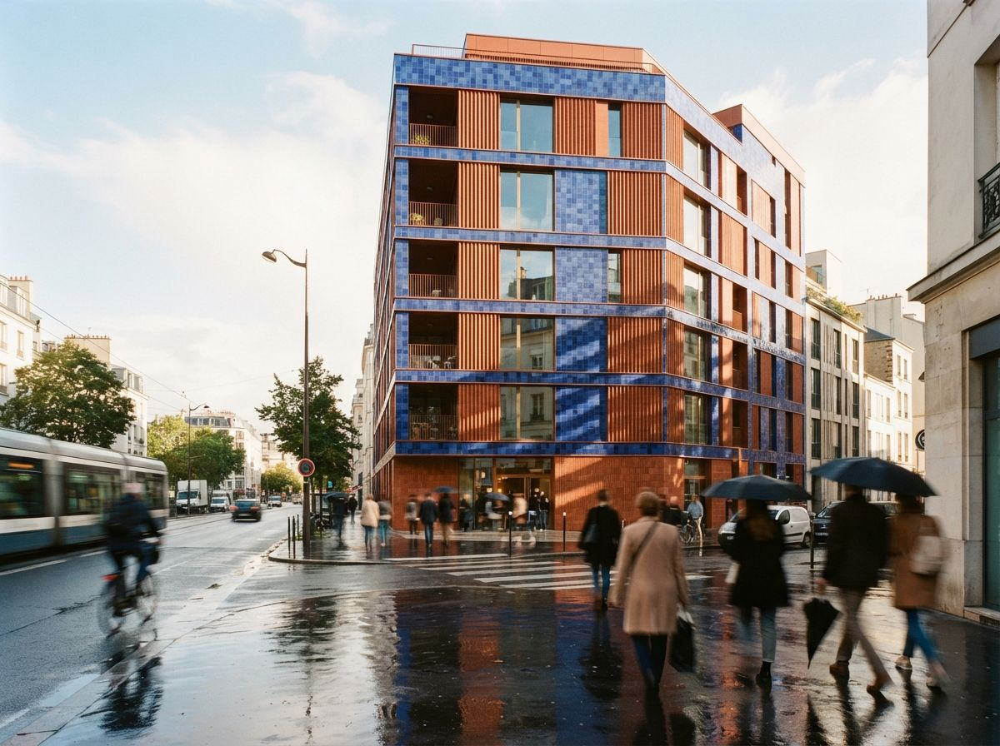
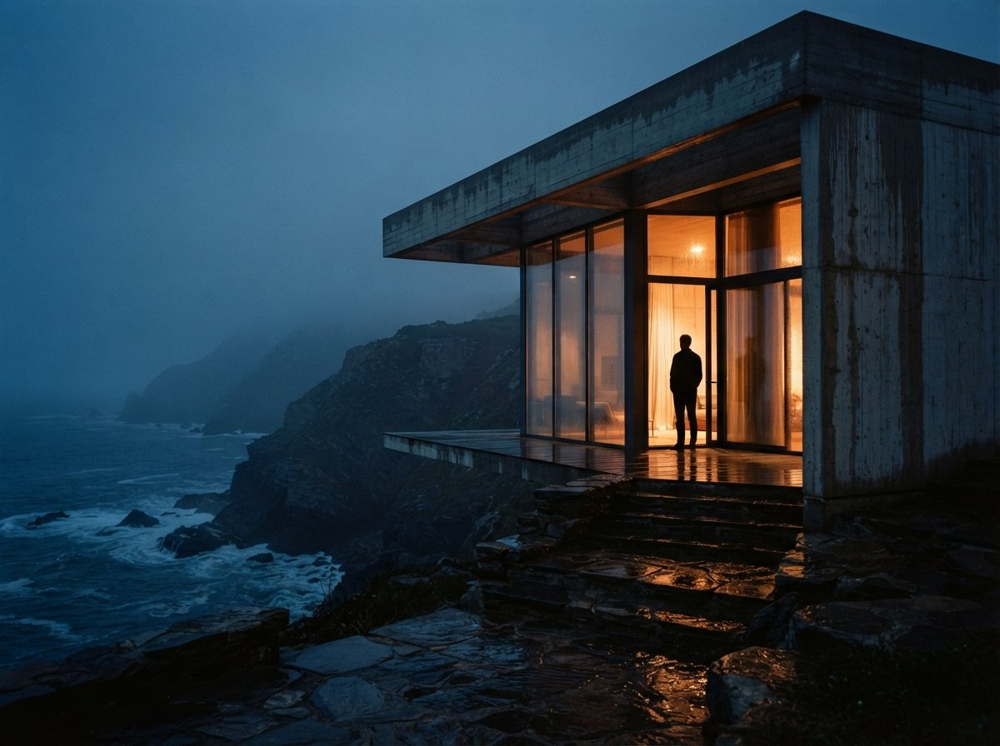

There was a prediction, around 2023, that AI rendering would flatten the skill gap. Anyone could type a sentence and get a beautiful image, so the decade a visualization artist spent learning light and composition was about to become sentimental overhead. Three years on, the opposite happened. The gap between a fluent artist using AI and a novice using the same AI is wider than the old gap between a fluent artist and a novice in V-Ray, because the old workflow at least forced the novice to slow down. The new one hands them thirty images an hour and no way to know which one is bad.
What "fundamentals" actually means here
Art fundamentals is a phrase that sounds like a drawing class, so architects tune it out. In archviz it means five specific, learnable things.
- Composition. Where the camera stands, what the frame includes, where the eye enters and lands. In AI workflows this is decided in your viewport before the model ever runs.
- Value structure. The pattern of light and dark that makes an image read from across the room. Convert any great archviz image to grayscale and it still works. Most AI output fails this test, because diffusion models love mid-tones.
- Light logic. One sun, consistent shadow softness, believable bounce. The single most common tell in AI renders, and the subject of our physical tells checklist.
- Color discipline. A palette with a temperature bias and a restrained accent, not the confetti a model produces when nobody is steering.
- Staging. Entourage density, prop choice, the sense that someone lives in the building. Models overcrowd by default; restraint is a learned instinct, one we mapped in the entourage piece.
Notice that none of these is a rendering skill in the software sense. No item on the list mentions samples, caustics, or a node graph. That is exactly why they survived the tool change.

Execution got cheap. Selection got expensive.
Here is the economic shift underneath the whole argument. The old workflow priced execution high: a full V-Ray scene took days, so a firm needed someone whose hands could produce the image. AI collapsed that price to minutes. But every produced image still needs someone to judge it, and judgment did not get cheaper. It got more expensive, because there is now thirty times more output to judge and the errors are subtler. A blown render in 2019 looked blown. A blown AI render in 2026 looks plausible and is wrong about the shadow direction.
AI moved the fundamentals from your hands to your eye. The hands were replaceable. The eye never was.
This is why the practitioner threads keep converging on the same quiet stack, Photoshop AI for surgical additions and a renderer they already trust, rather than the full text-to-image pipelines the listicles push. A tool like generative fill rewards knowing exactly what the image needs, a person here, a softer sky, more depth in the planting. It is a scalpel for people who can already see. A prompt box, by contrast, is a slot machine for people who can't. The artists in that thread aren't resisting AI. They are routing it through their fundamentals, the way we described in the generative fill piece, and skipping the tools that ask them to gamble.
Where each fundamental lives now
| Fundamental | Where it lived in 2019 | Where it lives in 2026 |
|---|---|---|
| Composition | Camera placement in the scene file | Viewport framing before the AI pass, and rejecting outputs that recompose |
| Value structure | Lighting rig and post grade | Choosing between AI variants; grayscale check before sending |
| Light logic | Sun studies, HDRI choice | Lighting reference selection and the QA pass on every output |
| Color discipline | Material palette, LUTs | Reference kit curation, one palette image per project |
| Staging | Asset libraries, hours of placement | Prompt restraint, entourage editing, deleting what the model over-adds |
Read the right column top to bottom and a pattern appears: every fundamental now expresses itself as a choice rather than a construction. Choosing the frame, choosing the variant, choosing the reference, deleting the excess. The reference image piece from yesterday made the point that the steering wheel moved to precedent images. This is the same point one level up. Steering by precedent only works if you can tell a good precedent from a pretty one, and that discrimination is the fundamentals, wearing a new interface.

The floor rose. The ceiling went quiet.
The honest complication: AI raised the floor dramatically. A student with no training now produces images that would have taken a junior artist a year to reach. This is real, and it is why the flattening prediction felt true for a while. But the floor rising is precisely what makes the ceiling invisible. When every portfolio contains competent-looking AI images, competence stops differentiating anyone. What differentiates is the image that reads correctly in grayscale, holds one light source, and stages a room like a photographer instead of a prop department. Clients can't name those qualities. They just point at that image and say "this one." Every archviz artist knows which colleague's work gets pointed at, and it isn't random.
There is also a compounding effect the tools don't advertise. The artist with fundamentals gets more out of every model update, because their references are better, their rejections are faster, and their fixes are surgical rather than regenerative. The novice re-rolls; the artist finishes by hand. Same tool, widening gap.
How to build the eye without the decade
The good news for architects who never trained in visualization: the judgment version of the fundamentals is faster to learn than the execution version, because AI generates unlimited practice material.
- Study photographs, not renders. Renders teach you other people's errors. Photographs of built work teach you how light actually behaves on facades, which is the standard your eye should carry.
- Grayscale everything. Before sending any image, desaturate it. If the design no longer reads, the value structure failed, whatever the colors were doing.
- Do forced-choice reps. Generate four variants, pick one, and say out loud why. The articulation is the exercise. Ten minutes a day beats a weekend course.
- Keep a kill list. Every time a client or colleague catches something you missed, write down what your eye skipped. Light direction and material scale will dominate the early list.
Our take
The Reddit artist's phrasing was better than any thinkpiece: the AI "doesn't really clash" with studying fundamentals. Tools don't clash with fundamentals. Tools have never clashed with fundamentals. The camera didn't retire painters' understanding of light, it hired it into a new medium. AI rendering is doing the same thing to archviz, moving composition, value, light, color, and staging out of the hands and into the eye, then paying the eye better than it ever paid the hands.
The machine makes the images now. Someone still has to know which one is good, and that someone is hired.
Written from the July 8, 2026 intel sweep: the r/archviz thread on which AI tools working artists actually use, and the recurring pattern of practitioner stacks favoring surgical tools over full generation pipelines. Claims about tool behavior checked against prior ArchiGen testing. No affiliate relationship with any tool named.